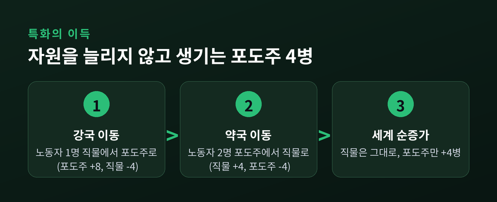
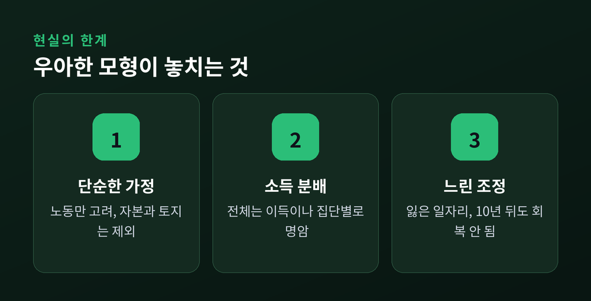

이번 글에서는 경제학에서 가장 아름다운 결론으로 꼽히는 비교우위를 정리해 보겠습니다.
질문은 단순합니다. 한 나라가 모든 물건을 더 싸고 빠르게 만든다면, 굳이 다른 나라와 무역할 이유가 있을까요. 상식적으로는 없어 보입니다. 그런데 200년 전 데이비드 리카도는 정반대를 증명했습니다. 모든 것을 잘하는 나라도 무역을 하면 이득을 봅니다.
먼저 두 개념을 갈라야 합니다.
절대우위는 같은 자원으로 더 많이 만드는 능력입니다. 애덤 스미스가 무역의 근거로 삼았습니다. 이 논리대로라면, 두 물건을 다 잘 만드는 나라는 무역할 이유가 없습니다.
리카도는 여기서 한 걸음 더 들어갑니다. 중요한 것은 절대적인 생산성이 아니라 기회비용이라는 것입니다.
기회비용이란 무엇을 하나 얻기 위해 포기하는 다른 것의 양입니다. 포도주 한 병을 더 만들려면 직물 몇 필을 포기해야 하는가. 이 포기의 크기가 작은 쪽이 그 물건에 비교우위를 가집니다.
리카도가 든 예시를 그대로 보겠습니다. 두 나라, 두 물건뿐인 세계입니다.
영국은 직물 한 단위에 100시간, 포도주 한 단위에 120시간이 듭니다. 포르투갈은 직물에 90시간, 포도주에 80시간이 듭니다.
숫자를 보면 포르투갈이 두 물건 모두 적은 시간에 만듭니다. 포르투갈은 직물과 포도주 양쪽에서 절대우위입니다. 스미스식으로 보면 포르투갈은 영국과 거래할 까닭이 없습니다.
그런데 기회비용을 따지면 그림이 달라집니다.
포르투갈에서 포도주 한 단위를 만들려면 직물 약 0.89단위를 포기합니다(80을 90으로 나눈 값). 영국에서 같은 포도주 한 단위는 직물 1.2단위를 포기해야 합니다. 포도주를 포기하는 값이 포르투갈이 더 쌉니다.
반대로 직물의 기회비용은 영국이 0.83단위, 포르투갈이 1.125단위입니다. 직물은 영국이 더 싸게 포기합니다.
정리하면 이렇습니다. 포르투갈은 포도주에, 영국은 직물에 비교우위를 가집니다. 모든 것을 잘하는 포르투갈조차, 자기가 상대적으로 더 잘하는 포도주에 집중하는 편이 낫습니다.
이제 이득이 실제로 어디서 나오는지 숫자로 보겠습니다. 이해를 돕기 위해 노동자 한 명 기준으로 바꾼 예를 들겠습니다.
강국은 노동자 한 명이 하루에 포도주 8병 또는 직물 4필을 만듭니다. 약국은 포도주 2병 또는 직물 2필을 만듭니다. 강국이 두 물건 다 잘 만드는, 앞서 말한 포르투갈 같은 나라입니다.
기회비용을 계산하면, 강국은 포도주 한 병에 직물 0.5필을 포기하고, 약국은 직물 한 필을 포기합니다. 포도주는 강국이, 직물은 약국이 상대적으로 싸게 만듭니다.
여기서 재배치를 해 봅니다.
강국에서 노동자 한 명을 직물에서 포도주로 옮기면, 포도주는 8병 늘고 직물은 4필 줍니다. 이 줄어든 직물 4필을 약국이 메웁니다. 약국 노동자 두 명을 포도주에서 직물로 옮기면, 직물이 4필 늘고 포도주가 4병 줍니다.
세계 전체를 합산해 봅니다. 직물은 4필 줄었다가 4필 늘어 변화가 없습니다. 포도주는 8병 늘고 4병 줄어 4병이 순수하게 남습니다.

자원을 한 톨도 더 쓰지 않았습니다. 그저 각자 잘하는 쪽으로 옮겼을 뿐입니다. 그런데 포도주 4병이 새로 생겼습니다. 이 여분이 두 나라가 나눠 갖는 무역의 이득입니다.
이득이 생겼다면, 누가 얼마나 가져갈까요. 이것을 정하는 것이 교역조건입니다.
교역조건은 두 나라의 기회비용 사이 범위 안에서 정해집니다. 앞의 예에서 직물 한 필의 값어치는 강국에겐 포도주 2병, 약국에겐 포도주 1병입니다. 그 사이인 1.5병에서 거래한다고 해 봅니다.
강국은 직물을 직접 만들면 포도주 2병을 포기해야 합니다. 그런데 무역하면 포도주 1.5병에 직물을 얻습니다. 0.5병 아낍니다. 약국은 포도주를 직접 만들면 직물 한 필을 포기하지만, 무역으로는 0.667필에 얻습니다. 역시 아낍니다.
핵심은 이것입니다. 양쪽 모두 수입품을 제 손으로 만드는 것보다 싸게 사 온다. 그래서 둘 다 이득입니다. 단, 교역조건이 이 범위를 벗어나면 한 나라는 무역할 이유가 사라집니다. 이득이 실제로 생기려면, 세계시장의 상대가격이 자급자족 때의 상대가격보다 유리해야 한다는 조건이 반드시 붙습니다.
이 원리는 나라 사이에만 통하는 것이 아닙니다. 우리 일상에도 그대로 적용됩니다.
유능한 변호사가 있다고 해 봅니다. 타이핑도 사무실의 그 누구보다 빠릅니다. 서류 정리도 완벽합니다. 이 변호사는 문서 작업까지 직접 하는 것이 맞을까요.
아닙니다. 변호사가 한 시간 타이핑하는 동안 포기하는 것은, 같은 시간에 벌 수 있었던 훨씬 큰 수임료입니다. 타이핑의 기회비용이 너무 큽니다. 그래서 문서 작업은 비서에게 맡기고, 자신은 변론에 집중합니다. 비서보다 타이핑을 잘하는데도 그렇습니다.
포르투갈이 포도주에 특화하는 논리와 똑같습니다. 잘하는 일이 아니라, 상대적으로 더 잘하는 일에 집중하는 것. 분업의 뿌리에는 이 비교우위가 있습니다.
여기까지가 교과서의 결론입니다. 하지만 현실은 이 우아한 모형이 담지 못한 부분이 있습니다. 균형을 위해 한계도 짚겠습니다.
첫째, 모형이 지나치게 단순합니다. 리카도는 생산요소로 노동만 셈했습니다. 토지와 자본은 빠져 있고, 규모의 경제나 운송비도 없다고 가정합니다.
둘째, 분배의 문제입니다. 스톨퍼-사무엘슨 정리는 무역으로 나라 전체는 이득을 봐도 그 안에서 이득 보는 집단과 손해 보는 집단이 갈린다는 것을 보였습니다. 값싼 수입품이 밀려들면, 그 물건을 만들던 노동자는 직격탄을 맞습니다.
셋째, 조정이 느립니다. MIT의 데이비드 오터 연구진은 1999년부터 2011년까지 중국산 수입 급증으로 미국에서 최대 240만 개의 일자리가 사라졌다고 추정했습니다. 더 뼈아픈 대목은 그다음입니다. 충격을 받은 지역은 10년이 지나도 임금과 고용이 회복되지 않았습니다.

교과서는 "일자리를 잃은 노동자가 곧바로 다른 산업으로 옮겨 간다"고 가정합니다. 현실의 사람은 그렇게 빨리 움직이지 못합니다.
정리하면 이렇습니다.
비교우위는 "무역하면 전체 파이가 커진다"는, 여전히 무너지지 않은 명제입니다. 모든 것을 잘하는 나라도 무역에서 이득을 봅니다. 다만 그 이득이 자동으로, 고통 없이, 모두에게 돌아가지는 않습니다.
커진 파이를 어떻게 나눌지는 이론이 아니라 정책의 몫입니다. 재교육과 사회안전망, 그리고 밀려난 노동자를 위한 이전지출이 바로 여기서 갈라집니다.
무역은 파이를 키운다. 그 파이를 공정하게 나누는 일은, 여전히 우리에게 남은 숙제입니다.